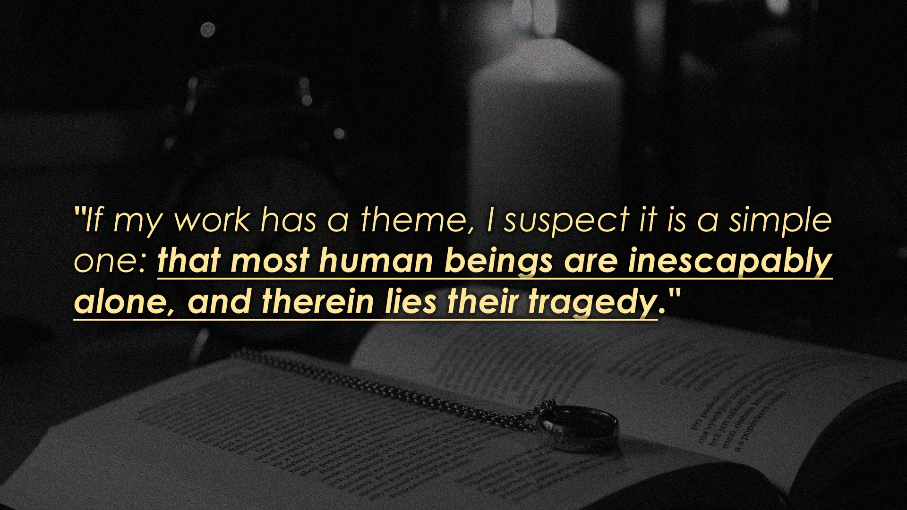

Taiwan Tattoo History
In Taiwan, facial tattoos of the Atayal tribe are called ptasan; they are used to demonstrate that an adult man can protect his homeland, and that an adult woman is qualified to weave cloth and perform housekeeping. Taiwan is believed to be the point of origin of all the Austronesian peoples which includes Filipinos, Indonesians, Polynesians and Malagasy peoples, all with strong tattoo traditions. This suggests the tradition may have originated with their ancestors in Taiwan, as some Taiwanese tribes are still practicing tattooing in the 21st century.
Tattoo trend in Taiwan
Tattooing is becoming more mainstream in Taiwan. More women are having tattoos, and many aren't shy about making a dramatic statement. They prefer images that are related to beauty, such as butterflies or flowers. Men tend to opt for more traditionally masculine images, like tigers and dragons.
The local pop culture - with more actors, singers and TV stars having tattoos - has had a big influence on the current trend for tattooing. Younger people are beginning to consider tattoos as a form of beauty and an expression of personal style. Taiwan's tattooists often use images influenced by Buddhism and ancient Chinese mythical animals.
Why have a tattoo
Why do people want to have tattoos? Some say it reflects an element of psychological domination. People who have a tattoo want to be noticed. They feel that if people see their tattoo, they'll show more respect towards them. Some believe it's like a coat of armour covering up a lack of self-confidence. Others see it as a form of self-empowerment and self-expression. But for many younger people, the more likely reason is that it has become fashionable.